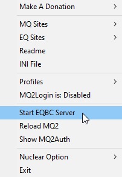

Profusion Macro - Overview
Overview
This is a multi class macro for profusion - Include all classic plugin, warping, eqwire and custom - ... (need to complement)
Rules
- You only used Profusion Macro and plugin only on this server. this goes against most other server rules.
- So the second rule, never share this content files.
- And finally the third rule which is close to my heart, send me directly your remarks, your wishes, or your improvements that you have made. This is good for everyone.
1. Contribute by sending a PayPal payment to @Guizmo
Create an account on gitlab https://gitlab.com/
Payments should be submitted via PayPal using the "Send to Friend" option at this address: (contact the server admin for the PayPal address) The minimum is 10usd to encourage us.
https://www.paypal.com/myaccount/transfer/homepage/pay
To have right access please make sure that you list your discord @name and gitlab @account in the notes so I know who to apply them to!
Note: Processing these is manual. I will get notified immediately but it may take me a while to apply right, please let me know on Discord (@Guismo). https://discord.io/eqprofusion
If you would like to support in other ways, please reach out to me on Discord with details.
2. Obtain a copy of Profusion Macro
Download from this link by login with your gitlab account
https://gitlab.com/moguayv/eqprofusion-mq2red_rof2/-/archive/master/eqprofusion-mq2red_rof2-master.zip
Extract these zipped files into the directory of your choice, prefer to use an ordered directory structure like this : C:\Games\EqProfusion\MQ2Red_ROF2 C:\Games\EqProfusion\Everquest_ROF2
3. Run Macroquest
From the macroquest directory run MacroQuest2.exe
On your taskbar, right clic on macroquet and run EQBC Server

4. Start Everquest
Start normally everquest directly or create Profiles in macroquest to run your bots
5. Start Profuion macro
Use the /start command to start the macro on all your bots at once
Archived 2020 version of this page
Overview
This is a multi class macro for profusion
- Include all classic plugin, warping, eqwire and custom
- ... (need to complement)
Rules
- You only used Profusion Macro and plugin only on this server. this goes against most other server rules.
- So the second rule, never share this content files.
- And finally the third rule which is close to my heart, send me directly your remarks, your wishes, or your improvements that you have made. This is good for everyone.
1. Contribute by sending a PayPal payment to @Guizmo
Create an account on gitlab https://gitlab.com/
Payments should be submitted via PayPal using the "Send to Friend" option at this address: (contact the server admin for the PayPal address)
The minimum is 10usd to encourage us.
https://www.paypal.com/myaccount/transfer/homepage/pay
To have right access please make sure that you list your discord @name and gitlab @account in the notes so I know who to apply them to!
Note: Processing these is manual. I will get notified immediately but it may take me a while to apply right, please let me know on Discord (@Guismo).
https://discord.io/eqprofusion
If you would like to support in other ways, please reach out to me on Discord with details.
2. Obtain a copy of Profusion Macro
Download from this link by login with your gitlab account
https://gitlab.com/moguayv/eqprofusion-mq2red_rof2/-/archive/master/eqprofusion-mq2red_rof2-master.zip
Extract these zipped files into the directory of your choice, prefer to use an ordered directory structure like this :
C:\Games\EqProfusion\MQ2Red_ROF2
C:\Games\EqProfusion\Everquest_ROF2
3. Run Macroquest
From the macroquest directory run MacroQuest2.exe
On your taskbar, right clic on macroquet and run EQBC Server
4. Start Everquest
Start normally everquest directly or create Profiles in macroquest to run your bots
5. Start Profuion macro
Use the /start command to start the macro on all your bots at once